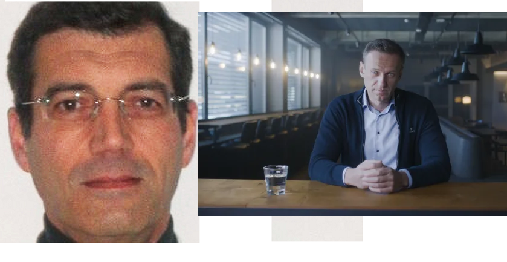

Eric Zemmour :
Muse de l'Amour ?
×
Eric Zemmour condamné pour incitation à l’amour et à la fraternité
entre les peuples
Décidément, il n’en rate pas une !
Sur le plateau de CNews il a déclaré : « Mais sérieusement,
faut arrêter à un moment donné ! Vous avez vu le climat anxiogène
que le système médiatique crée en stigmatisant toujours plus les
descendants de l’immigration ? Nan sérieux, si on continue comme
ça on ouvre un boulevard au FN pour 2022 ! Aimez-vous les uns les
autres, c’est écrit dans tous les bouquins religieux, faites un effort ! »
Il écope d’une amende de 10 000 €, il a promis qu’il recommencerait.
CNews, la chaîne de Vincent Bolloré a décidé de sévir et de mettre à
pied le polémiste, qui, cette fois-ci a vraiment dépassé les bornes.
Le petit Grégory réapparaît en vie
en nageant dans l'eau bénite !
×
Le petit Grégory réapparaît en vie en nageant dans l'eau bénite !
Dans une scène digne d'un miracle, le petit Grégory,
disparu depuis plus de 40 ans, a été retrouvé en vie et
en train de nager dans l'eau bénite d'une église des Vosges.
Les habitants de Lépanges-sur-Vologne ont été témoins d'un
événement extraordinaire alors qu'ils découvraient Grégory,
aujourd'hui âgé de 44 ans, évoluant gracieusement dans le bénitier
de l'église locale. Les autorités ont confirmé son identité après
une enquête rapide.
Les raisons derrière cette réapparition miraculeuse demeurent
un mystère, mais une vague de soulagement et de joie a envahi
la petite ville alors que Grégory partageait son incroyable
histoire de survie. Qu'il s'agisse d'un miracle divin ou d'un
phénomène plus terre à terre, la réapparition du petit Grégory
offre un dénouement surprenant à l'un des mystères les plus
célèbres de la France.
Trump recruté par les témoins de Jéhovah:
la bible en tête des ventes
×
Trump recruté par les témoins de Jéhovah: la bible en tête des ventes
Le président des USA prouve enfin son utilité.
Son bagout et son côté rentre-dedans ont fait mouche chez les témoins de
Jéhovah.
« On cherchait un berger pour relancer notre économie.
La scientologie a Tom Cruise et bien nous on a Donald Trump ! »
« In the name of God, I say Yes. » sont les mots de Trump lors de la
signature de son contrat avec les témoins. Trump est officiellement un
berger et supervise la vente de bible sur le territoire américain.
« C’est incroyable: dès la première passe (faire le trottoir pour vendre
chez les témoins) il a vendu 34 bibles en 18 minutes ! On ne l’arrêtait plus,
un vrai tapin (vendeur pro). »
Les témoins de Jéhovah sont fiers de leur acquisition « Comme quoi
on peut concilier religion et politique. La Bible se vend désormais
très bien, on espère qu’elle sera comprise par le plus grand nombre.
En cas de doute, passez-nous voir on vous expliquera. »

Un chat équipé d'une caméra :
Agent du Hamas ?

Xavier Dupont de Ligonnès :
Un nouveau rebondissement
×
« L’armée israélienne déclare avoir capturé un agent secret paléstinien :
un chat équipé de micro-caméras. »
Dans une histoire digne d’un film d’espionnage, l’armée israélienne
a récemment déclaré avoir capturé un agent secret plutôt inattendu
: un chat équipé de micro-caméras. Cette incroyable révélation a
secoué les médias du monde entier et a suscité l’émerveillement de
nombreux observateurs. Découvrons ensemble comment un simple félin
est devenu un redoutable espion au service de la cause palestinienne.
L’histoire du chat espion palestinien commence dans les rues animées
de Gaza, où ce félin astucieux a été recruté par des militants
palestiniens pour mener des opérations de surveillance en territoire
israélien. Grâce à sa discrétion naturelle et à sa capacité à se
faufiler partout, le chat a pu recueillir des informations précieuses
sans éveiller les soupçons des autorités israéliennes.
×
Le corps d’Alexeï Navalny est en réalité celui de Xavier Dupont de Ligonnès
Nouveau rebondissement dans le multivers improbable actuel:
le corps quasiment rendu à la famille Navalny est celui de
Xavier Dupont de Ligonnès.
Les experts dépêchés sur place en télétravail ont pu regarder
le corps en détail via webcam « Aucun doute possible, il a une
tête, 2 bras, 2 mains et 2 jambes tout comme Xavier Dupont de Ligonnès.
Bon, c’est un peu dans le désordre mais on va dire que c’est lui. »
Le corps devrait rapidement être rendu à la France même si sa femme,
Agnès, n’a toujours pas demandé son rapatriement.